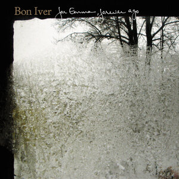

For Emma, Forever Ago is the debut studio album by American indie folk band Bon Iver. It was first self-released in July 2007, and later saw wide release on the Jagjaguwar label in February 2008. The album is principally the work of singer-songwriter Justin Vernon. While living in Raleigh, North Carolina, Vernon fell ill with mononucleosis and a liver infection, and grew frustrated with his songwriting and life. He left Raleigh and drove to his father's remote hunting cabin an hour northwest of his hometown, Eau Claire, Wisconsin, hoping to be alone.
The album was recorded at the cabin between late 2006 to early 2007. Vernon abandoned his old songwriting methods and instead focused on wordless melodies that he later set to words, which he felt evoked a more subconscious meaning. The record's lyrical subjects include lost love and mediocrity. His folk-infused songs include heavy choral arrangements, featuring Vernon's falsetto, and horns. He hunted his own food and spent much of his time isolated. Though he did not intend to make an album, he received strong encouragements from friends and decided to self-release For Emma, Forever Ago in July 2007. After several performances and online exposure, he was signed to Jagjaguwar later that year.
Bon Iver: For Emma, Forever Ago Album Review
As the second half of its title implies, the album is a ruminative collection of songs full of natural imagery and acoustic strums-- the sound of a man left alone with his memories and a guitar. Bon Iver will likely bear comparisons to Iron & Wine for its quiet folk and hushed intimacy, but in fact, Vernon, adopting a falsetto that is worlds away from his work with DeYarmond Edison, sounds more like TV on the Radio's Tunde Adebimpe, not just in his vocal timbre, but in the way his voice grows grainier as it gets louder.
Vernon gives a soulful performance full of intuitive swells and fades, his phrasing and pronunciation making his voice as much a purely sonic instrument as his guitar. In the discursive coda of "Creature Fear" he whittles the song down to a single repeated syllable-- "fa." Rarely does folk-- indie or otherwise-- give so much over to ambience: Quivering guitar strings, mic'ed closely, lend opener "Flume" its eerily interiorized sound, which matches his unsettling similes. "Lump Sum" begins with a choir of Vernons echoing cavernously, which, along with that rhythmically rushing guitar, initiates the listener into the song's strange space.
For Emma isn't a wholly ascetic project, though. A few songs benefit from additional recording and input after Vernon's initial sessions: Christy Smith of Raleigh's Nola adds flute and drums to "Flume", and Boston-based musicians John DeHaven and Randy Pingrey add horns to "For Emma"; surprisingly, their company doesn't break the album's spell of isolation, but rather strengthens it, as if they're only his imaginary friends. Vernon turns the cabin's limitations into assets on "The Wolves", layering his falsetto, tweaking his vocal tones to simple yet devastating effect, and piling on clattering percussion to create a calamitous finale.
That passage contrasts nicely with the simple intro to the next track, "Blindsided", which builds from a single repeating note into a halting chorus melody that sells his skewed Walden imagery: "I crouch like a crow/ Contrasting the snow/ For the agony, I'd rather know." Vernon's lyrics are puzzle pieces that combine uneasily; his nouns tend to be concrete, yet the meanings slippery. On "Flume", the lines "I am my mother's only one/ It's enough" form a strong opener, but the song grows less and less lucid: "Only love is all maroon/ Lapping lakes like leery loons/ Leaving rope burns-- reddish ruse." It's as if he's trying to inhabit the in-between spaces separating musical expression and private rumination, exposing his regrets without relinquishing them. His emotional exorcism proves even more intense for being so tentative.

The album has 9 tracks and lasts 37 minutes